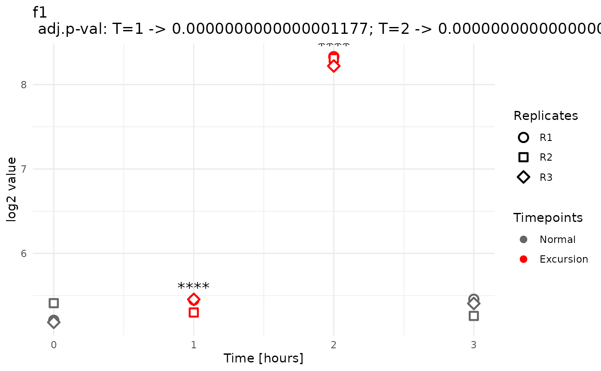

Identifies significant local peaks or valleys (excursions) in time-series omics data using a Union-Intersection Test (UIT)-based approach. This function wraps the detection and plotting steps, returning visualizations of all features with at least one excursion.
Arguments
- splineomics
list: A list containing the preprocessed time-series input data. Must include the following named elements:data:matrixNumeric matrix of feature values. Rows are features (e.g., genes or proteins), columns are samples (timepoint–replicate combinations).meta:data.frameData frame of sample metadata corresponding to the columns ofdata. Must include a"Time"column, and typically other columns describing conditions or experimental factors.meta_batch_column:character(1)Character string giving the column name inmetathat identifies replicates or batches.padjust_method:character(1)Character string specifying the method for p-value adjustment (e.g.,"BH","bonferroni").
- alphas
numeric(1)|list(numeric): A single numeric value or a named list of numeric thresholds used to identify significant excursion points. If a single value is provided (numeric scalar or list of length 1), the same threshold is applied to all condition levels. If a named list is provided, it must contain one numeric value per condition level, with names matching the condition levels exactly. This input is normalized internally to ensure consistent per-level access.- padjust_method
character(1): A character string specifying the method for multiple testing correction. Defaults to"BH"(Benjamini-Hochberg).- support
numeric(1): Minimum amount of non-NA values in each timepoint that influence a PVC-test result. For example, with timepoints 10, 15, 20 and support = 1, then for timepoint 15 for a given feature, the timepoints 10, 15, and 20 each must have at least 1 non-NA value. If one or more of those timepoints for that feature don't meet this criterium, then the p-value for that feature at timepoint 15 is set to NA.- plot_info
list: List with optional elements used to annotate spline plots:y_axis_label:character(1)single string for the y-axis label.time_unit:character(1)single string used in the x-axis label.treatment_labels:list(character(1))named list of single strings.treatment_timepoints:list(numeric(1))named list of single numeric values.
If any treatment list is present, both must be present. The two lists must have identical name sets. Allowed names are the values of
meta[[condition]].Vertical dashed lines are drawn at the given timepoints for facets whose level name matches a list name, and labeled with the corresponding string (e.g., feeding, temperature shift).
Example:
- report_dir
character(1): Character string specifying the directory path where the HTML report and any other output files should be saved.
Value
A named list of ggplot objects, where each element corresponds to a feature with at least one detected peak or valley. Each plot shows expression profiles across timepoints, highlights excursions in red, and annotates significant excursions with significance stars.
Details
A peak or valley is a timepoint whose expression value is significantly different from both its neighbors and deviates in the same direction: either significantly higher than both (a peak) or significantly lower than both (a valley).
Statistically, this is tested with a compound contrast in limma:
(T - T_prev) + (T - T_next) = 2T - T_prev - T_next. The contrast has
power only when T is an outlier vs. both neighbors in the same
direction. The resulting p-value is FDR-adjusted and compared to
alpha.
Validates inputs via
check_splineomics_elements()andInputControl.Detects local excursions using
pvc_test().Displays the number of total excursion hits found.
Generates plots with
plot_pvc(), marking excursion significance by the chosenalpha.
Examples
set.seed(1)
## Minimal toy with 4 timepoints, flat with a single mid spike (t=2).
## 2 conditions (WT/KO), 3 replicates each → 24 samples total.
## Your original 8x6 toy matrix
toy6 <- matrix(
c(
3, 5, 8, 12, 17, 23, # f1
23, 17, 13, 9, 6, 4, # f2
5, 3, 2, 2, 3, 5, # f3
1, 4, 9, 8, 4, 1, # f4
10, 10, 10, 10, 10, 10, # f5
2, 2, 2, 9, 12, 15, # f6
4, 5, 7, 10, 14, 19, # f7
12, 11, 9, 8, 9, 12 # f8
),
nrow = 8, ncol = 6, byrow = TRUE,
dimnames = list(paste0("f", 1:8), paste0("s", 1:6))
)
## Baselines per condition from toy6 (WT = cols 1:3, KO = cols 4:6)
wt0 <- rowMeans(toy6[, 1:3])
ko0 <- rowMeans(toy6[, 4:6])
## Make 4 flat timepoints; spike at one middle timepoint (default t=2)
spike_tp <- 3 # 1=t0, 2=t1, 3=t2, 4=t3
spike_amp <- 3
flat4 <- function(base) cbind(base, base, base, base) # 8 x 4
wt <- flat4(wt0)
wt[, spike_tp] <- wt[, spike_tp] + spike_amp
ko <- flat4(ko0) # keep KO flat; spike KO too by adding the same line
# ko[, spike_tp] <- ko[, spike_tp] + spike_amp
## Create 3 replicates by adding tiny noise and bind WT then KO
rep3 <- function(M, sd = 0.2) {
do.call(cbind, lapply(1:3, function(i) {
M + matrix(rnorm(length(M), sd = sd), nrow(M), ncol(M))
}))
}
toy_data <- cbind(rep3(wt), rep3(ko))
rownames(toy_data) <- rownames(toy6)
colnames(toy_data) <- paste0("s", seq_len(ncol(toy_data))) # s1..s24
## Matching meta: 2 conditions × 3 reps × 4 timepoints = 24 rows
time <- 0:3
toy_meta <- data.frame(
Time = rep(time, times = 2 * 3),
condition = rep(c("WT", "KO"), each = 3 * length(time)),
Replicate = rep(paste0("R", 1:3), each = length(time), times = 2),
row.names = colnames(toy_data),
stringsAsFactors = FALSE
)
# Minimal annotation & report info
annotation <- data.frame(
id = rownames(toy_data),
row.names = rownames(toy_data)
)
report_info <- list(
omics_data_type = "Transcriptomics",
data_description = "Toy time-series (WT vs KO, t=0/1/2)",
data_collection_date = "2025-01-01",
analyst_name = "Example",
contact_info = "example@example.org",
project_name = "find_pvc_toy"
)
splineomics <- list(
data = toy_data,
meta = toy_meta,
annotation = annotation,
condition = "condition",
meta_batch_column = "Replicate",
padjust_method = "BH",
report_info = report_info,
feature_name_columns = "id"
)
plot_info <- list(
y_axis_label = "log2 value",
time_unit = "hours",
treatment_labels = NA,
treatment_timepoints = NA
)
# Run with a lenient alpha to ensure toy detections;
# write report to a temp dir to avoid clutter.
res <- find_pvc(
splineomics = splineomics,
alphas = 0.05,
padjust_method = "BH",
support = 1,
plot_info = plot_info,
report_dir = tempdir()
)
#> design matrix of interest not specified. Assuming a one-group experiment.
#>
#> Detected 16 total pattern hits for condition level: WT
#>
#> Summary by pattern type:
#> p: 8, v: 0, b: 0, t: 8
#>
#> Breakdown by timepoint:
#> 0: p=0; v=0; b=0; t=0
#> 1: p=0; v=0; b=0; t=8
#> 2: p=8; v=0; b=0; t=0
#> 3: p=0; v=0; b=0; t=0
#> design matrix of interest not specified. Assuming a one-group experiment.
#>
#> Detected 0 total pattern hits for condition level: KO
#>
#> Summary by pattern type:
#> p: 0, v: 0, b: 0, t: 0
#>
#> Breakdown by timepoint:
#> 0: p=0; v=0; b=0; t=0
#> 1: p=0; v=0; b=0; t=0
#> 2: p=0; v=0; b=0; t=0
#> 3: p=0; v=0; b=0; t=0
#>
#> Info PVC report generation completed successfully.
#> Your HTML reports are located in the directory: /tmp/Rtmpy5hVfh .
#> Please note that due to embedded files, the reports might be flagged as
#> harmful by other software. Rest assured that they provide no harm.
# Peek at one plot if available (WT first plot)
if (!is.null(res[["WT"]][["plots"]]) &&
length(res[["WT"]][["plots"]]) > 0) {
print(res[["WT"]][["plots"]][[1]])
}
